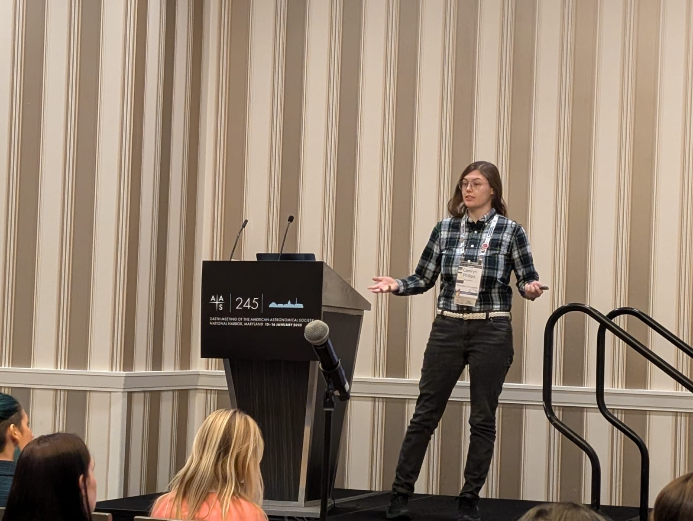
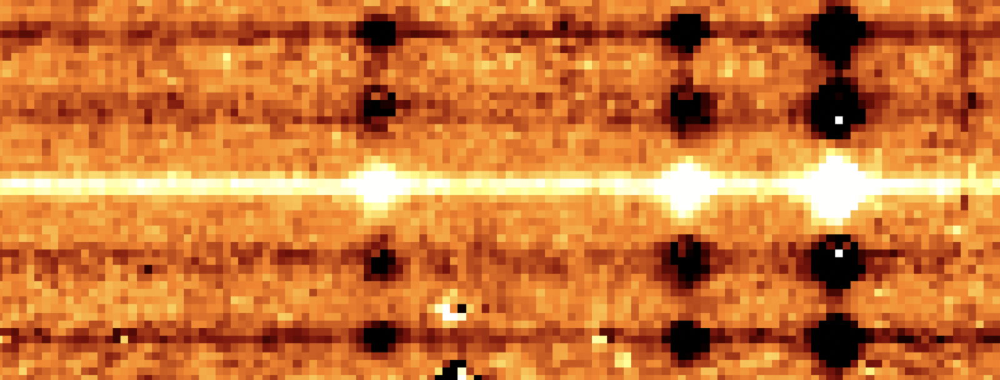
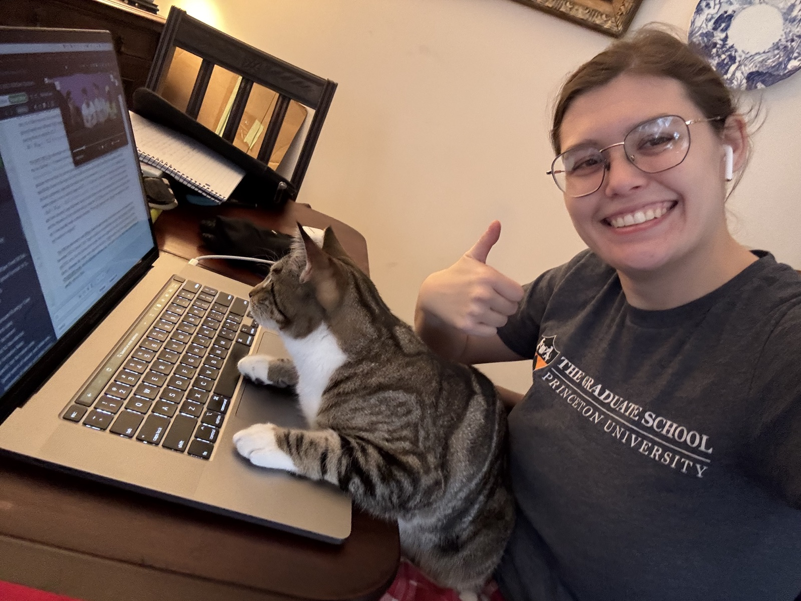

Intro
Hi! My name is Camryn Phillips (they/them). I completed my Ph.D. in the Department of Astrophysical Sciences at Princeton University in July 2026, advised by Michael A. Strauss. My research used the James Webb Space Telescope to look at galaxies in the early universe, specifically those with black holes at their centers which have material actively falling onto them and are putting out a lot of energy as a result (AGN).
Some of my favorite parts of grad school happened outside of research: running public observing nights, bringing middle and high school classes to the observatory, guest lecturing, and helping students through problem sets. I'm now looking to make teaching my career, and to help students find the same excitement about how the universe works that got me into astronomy.
Outside of work, I knit, cross-stitch, paint, draw, play video games, play and run Dungeons and Dragons campaigns, design crossword puzzles, do crossword puzzles, play soccer, basketball, and softball, watch trivia and game shows, hike, kayak, paddleboard, downhill ski, and most importantly of all, I go birdwatching.
I do not rock climb.
Teaching & Outreach
Teaching
-
Fall 2022
Teaching Assistant, AST 205: Planets in the Universe, Princeton University
Held office hours and review sessions and graded problem sets.
-
Sep – Dec 2018
Classroom Aide, Charlottesville High School
Led small-group and full-class discussions and reviewed material with students, as part of the Teaching as a Profession course at UVA.
-
May – Aug 2018
Intern, Smithsonian Science Education Center, Washington, D.C.
Designed curricula for, organized, and ran professional development for K–12 teachers, culminating in behind-the-scenes tours of the Smithsonian with expert presentations and hands-on activities.
-
c. 2015
Club Advisor & Co-Teacher, Lego Robotics Team, Cedar Point Elementary School
Co-led the school's Lego Robotics team alongside the science teacher.
Guest lectures & school visits
- Nov 2026 · upcomingArt Inspired by Astronomy, Montgomery High School
- Spring 2026Speaker, International Youth Astronomy Society
- Spring 2025Field trip for John Adams Middle School science classes
- Spring 2025Field trip for Edison High School science classes
- Spring 2025Guest lecture and demonstration, Princeton Public Library Youth Astronomy Course
- Spring 2024Guest lecture and demonstration, Asterisms: The Relations among their Verbal, Numerical, and Visual Representations across Cultures (IAS conference)
- Fall 2023Guest lecture and demonstration, Re-enacting the Scientific Revolution (Princeton freshman seminar)
- Fall 2022Speaker, Princeton Astronomy Club
Outreach & mentoring
-
2023 – 2025
Lead Coordinator, Princeton Public Observing Nights
Organized monthly observing sessions, operated the telescope, trained telescope operators and volunteers, ran public and private observing events, answered observatory inquiries, and designed posters and supporting materials. Featured in The Daily Princetonian (Feb 2025).
-
Early 2025
Birding Walk Guide, Princeton Birding Society & Friends of Herrontown Woods
Led a public birdwatching walk for a joint event of the two groups.
-
2023 – 2025
Lead Coordinator, Neurodiversity and Disability Affinity Group, Princeton
-
2022 – 2026
Mentor, Graduate Student Mentorship Program, Princeton
Observing nights
Academic Work

Presenting my thesis work at AAS 245, January 2025.
Ph.D. thesis
The Spatially Resolved Spectroscopic Properties of High Redshift Quasar Host Galaxies, Princeton University, 2026. Advised by Michael A. Strauss.

Spatially Resolved Spectroscopy of AGN Host Galaxies at z = 6 in the NIRSpec Fixed Slit
At high redshift, observing the host galaxies of quasars is incredibly difficult — so much so that, before the James Webb Space Telescope, such observations were impossible. Now, using JWST, we are able to investigate not only the photometry but the spectroscopy of the host galaxies of quasars using spatio-spectral analysis techniques. During my Ph.D., I worked to characterize the NIRSpec Fixed Slit PSF and apply it to quasars in order to reveal the spatially resolved spectra of their host galaxies. In my paper, I describe the characterization of the PSF, its application to 12 SHELLQs quasars, and the spatial and spectroscopic properties of the host galaxies it reveals.
Earlier research
Before JWST, I worked on the near-Sun solar wind with data from the Parker Solar Probe, on pulsar timing with NANOGrav, and, for my undergraduate thesis at the University of Virginia, on polarized light from accretion disks around spinning black holes.
Lead-author publications
- Phillips, C. L. et al. (2026). SHELLQs-JWST: Revealing the Spectra of Extended Emission in 12 z > 6 Quasar Host Galaxies using the JWST NIRSpec Fixed Slit. ApJ 1003. arXiv:2510.22403
- Phillips, C. L., Bandyopadhyay, R., McComas, D. J., & Bale, S. D. (2023). Association of intermittency with electron heating in the near-Sun solar wind. MNRAS 519, L1. doi
- Phillips, C. L., Bandyopadhyay, R., & McComas, D. J. (2022). Taylor Microscale and Effective Reynolds Number near the Sun from PSP. ApJ 933, 33. doi
- Phillips, C. L. & Ransom, S. (2022). Algorithmic Pulsar Timing. AJ 163, 84. doi
Full list, including contributing-author papers, on NASA ADS.
Selected talks
- Sep 2026Spatially resolving the spectroscopic properties of quasar host galaxies at z~6 with JWST, Galaxy group, University of Michigan
- Dec 2025Astro Lunch Talk, Penn State
- Nov 2025Astro Coffee, University of Pittsburgh
- Jan 2025AAS 245, National Harbor, MD
- Nov 2024Probing the Genesis of SMBHs conference, Kavli IPMU
- Oct 2024Inaugural Tinsley Workshop, Yale University
- Jan 2024AAS 243, New Orleans, LA
Service
- Spring 2024Journal referee, Nature

My research assistant, Rowan, reviewing the code.
Other Work
(or more accurately, work I don't get paid for)
Art
Crafts
Outside
Contact